20 Creating A Road Book
A rally road book describes the route to be taken in a rally. Road books describe the route in terms of road sections, lengths of road between road junctions encountered along the route (example; see also Everything you ever wanted to know about: rally notes). At each junction, the route to be taken is clearly identified.
One exciting possibility is that we can recover route information from OpenStreetMap and cast it as a graph (network) using the sfnetworks package and then identify all the road junctions along a route.
If we then zoom in on a particular junction node, we should be able to see the junction. If we can access the orientation of the road, we should be able to generate a tulip…
So the question is: can we find junctions on a route snapped to a road network?"
Under my current understanding, I haven’t found a way to do this yet…
A secondary question might be: can we transform a graph layout so that a spatially curved route is depicted as a straight line with junction turns off the route: a) depicted; b) depicted at their angle to the route?
Again, I haven’t currently found a way to do this.
It might also be worth considering what we can learn from the FIA Rally Safety Guidelines 2020 [h/t WRCStan] about stage design and selection when evaluating rally stage routes metrics as well as road networks.
20.1 Jemba Inertia Notes System
In a section entitled Using data to assess the suitability of a special stage, the FIA Rally Safety Guidelines 2020 suggest that as well as using historic information, the “Jemba System” for recording terrain data, including “the inclines, the dips, the bends and crests”. By also taking the road terrain (for example, gravel or asphalt) into account, and likely car classes, average speeds over the stage as well as highest speed and heaviest braking areas can also be determined. THe system can also report the margin for critical braking dist before stop (“how far you may carry on at competitive speed until you have to start braking to be able to stop at the stop control”) and the Jemba Safety Index (J/kg), the average kinetic energy of a car going through the corners.
The FIA Safety Guidelines illustrate how speeds might be visualised over a Google Earth map using a three colour scale (purple:over 150kph; red: over 90kph; yellow – 7590kph). The report also suggests that the Jemba system can predict the maximum cornering speed for any particular bend.
A Wikipedia page describing the Jemba Inertia Notes System gives examples of the descriptive and numerical labels that the Jemba system can generate as it converts odemtery and interal accelerometer data into something rather more human understandable. A visual grading shows how descriptive labels correspond to turn angle.
{kind=link}
20.2 Motorsport UK Specific Regulations for Rallying
Motorsport UK regulates motorsport in the UK. A set of specific regulations for rallying describe certain constraints on stage routes:
26.1.2. A control or check shall be considered to extend for 50m around the actual point at which Officials are making their records, unless clearly visible signs are displayed to define a different area.
26.2. It is not Permitted to define the route of a special stage by grid references or any other method requiring Competitors to choose their own route.
26.2.1. Any Flying Finish should be located at a point where cars can be expected to be travelling slowly as a result of a preceding bend or hazard.
26.2.2. The Flying Finish line must be at least 200m before the stop line which should be at least 100m before any public highway. Bad weather, slippery conditions and the potential speed of cars crossing the Flying Finish line may require these distances to be extended.
26.2.3. The area between the Flying Finish and the stop line should be free from bends, sharp or deceptive corners, or hazards such as gates, etc. This area is prohibited to spectators.
26.4.1. Organisers should allow at least 100m separation from the start of the stage before Competitors join other cars already on the stage.
26.6.2. Authorisation for stages not covered above must be obtained in writing from Motorsport UK and will only be considered when the following information has been submitted:
The individual stage name, number and location.
The length of the stage.
The type of surface (forest, tarmac, etc).
The average width of the road.
Diagram(s) of the venue showing stage routes and safety provisions.
The number of times Competitors are attempting the stage.
If the Competitors are attempting the stage more than once, the time interval between their first and second run, and the possibility of catching previous Competitors.
Whether Competitors attempting their second run will be interposed with those still attempting their first.
Whether the stage has a split route, and if so how far this is into the stage. On unsealed surfaces the stage must not consist of more than 21⁄2 miles of common route.
Whether extreme weather (eg heavy rain, dust, etc) will adversely affect a fair Competition.
Competitors have been seeded by performance in accordance with 24.1.4, without dispensation.
Suitable timing arrangements have been made at the Finish Line.
28.1.1. Special Stages must be over a distance of not less than half a mile and no stage may exceed 20 miles in length without written permission from Motorsport UK.
28.2.1. If the stage is wholly on a sealed surface, no Competitor should be able to achieve an average speed of more than 75mph.
28.2.2. If the stage is run partly or wholly on unsealed surfaces, no Competitor should be able to achieve an average speed of more than 70mph.
28.3. Special Stages should not use any sections of a venue in opposite directions at the same time, unless there is at least a 15m separation between the two routes with a continuous barrier to prevent a car crossing.
29.1.6. Along with the arrows and signs displayed on the Special Stage, each Competitor must be issued with a Tulip diagram of each stage showing location or hazard numbers or letters, and indicating the intermediate mileages between junctions, danger spots or hazards and the direction to be taken.
20.3 Load in Base Data
As ever, let’s load in our stage data:
# Original route data (KML file):
# https://webapps.wrc.com/2020/web/obc/kml/montecarlo_2021.xml
library(sf)
geojson_filename = 'montecarlo_2021.geojson'
geojson_sf = sf::st_read(geojson_filename)## Reading layer `montecarlo_2021' from data source `/Users/tonyhirst/Documents/GitHub/visualising-rally-stages/montecarlo_2021.geojson' using driver `GeoJSON'
## Simple feature collection with 9 features and 2 fields
## geometry type: LINESTRING
## dimension: XY
## bbox: xmin: 5.243488 ymin: 43.87633 xmax: 6.951953 ymax: 44.81973
## geographic CRS: WGS 84# Grab the first stage route
route = geojson_sf[1,]
# Get stage bounding box
stage_bbox = st_bbox(route)Get the coordinates into a UTM form, and also generate a buffered area around the route:
lonlat2UTM_hemisphere <- function(lonlat) {
ifelse(lonlat[1] > 0, "north", "south")
}
lonlat2UTMzone = function(lonlat) {
utm = (floor((lonlat[1] + 180) / 6) %% 60) + 1
if(lonlat[2] > 0) {
utm + 32600
} else{
utm + 32700
}
}
# Grab a copy of the original projection
original_crs = st_crs(geojson_sf[1,])
# Find the UTM zone for a sample a point on the route
crs_zone = lonlat2UTMzone(c(st_coordinates(route)[1,1],
st_coordinates(route)[1,2]))
# Create the projection string
utm_pro4_string = st_crs(crs_zone)$proj4string
#"+proj=utm +zone=32 +datum=WGS84 +units=m +no_defs"
# units in meters e.g. https://epsg.io/32632
# Transform the route projection
route_utm = st_transform(geojson_sf[1,], crs = st_crs(utm_pro4_string))
# Create a buffer distance
buffer_margin_200m = units::set_units(200, m)
buffered_route_utm <- st_buffer(route_utm, buffer_margin_200m)
buffered_route <- st_transform(buffered_route_utm, original_crs)
plot(st_geometry(buffered_route_utm))
plot(st_geometry(route_utm), col='red', add=TRUE)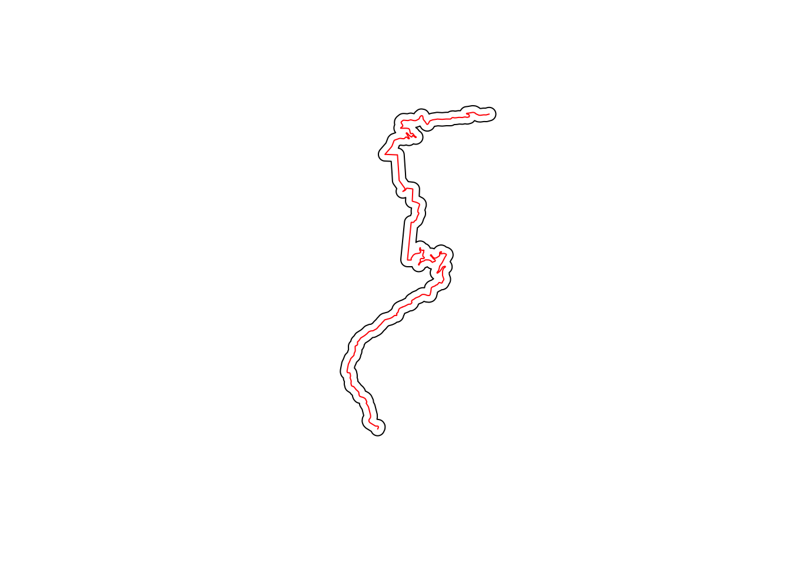
Also retrieve some highways data from OpenStreetMap:
library(osmdata)
stage_bbox = sf::st_bbox(buffered_route)
stage_osm = opq(stage_bbox) %>%
add_osm_feature("highway") %>%
osmdata_sf()
stage_osm## Object of class 'osmdata' with:
## $bbox : 44.7338167906645,5.88122798027631,44.8215309510708,5.94324234302002
## $overpass_call : The call submitted to the overpass API
## $meta : metadata including timestamp and version numbers
## $osm_points : 'sf' Simple Features Collection with 8706 points
## $osm_lines : 'sf' Simple Features Collection with 400 linestrings
## $osm_polygons : 'sf' Simple Features Collection with 0 polygons
## $osm_multilines : NULL
## $osm_multipolygons : NULL20.4 Using sfnetworks to Represent Routes and Road Networks
We can cast the stage route as a directed network using the sfnetworks::as_sfnetwork() applied to the linestring geometry of the route:
library(sfnetworks)
route_dg = as_sfnetwork(st_geometry(route_utm), directed = TRUE)
route_dg## # A sfnetwork with 2 nodes and 1 edges
## #
## # CRS: +proj=utm +zone=31 +datum=WGS84 +units=m +no_defs
## #
## # A rooted tree with spatially explicit edges
## #
## # Node Data: 2 x 1 (active)
## # Geometry type: POINT
## # Dimension: XY
## # Bounding box: xmin: 729177.5 ymin: 4957658 xmax: 732502.2 ymax: 4967064
## x
## <POINT [m]>
## 1 (729177.5 4957658)
## 2 (732502.2 4967064)
## #
## # Edge Data: 1 x 3
## # Geometry type: LINESTRING
## # Dimension: XY
## # Bounding box: xmin: 728265.7 ymin: 4957658 xmax: 732502.2 ymax: 4967115
## from to x
## <int> <int> <LINESTRING [m]>
## 1 1 2 (729177.5 4957658, 729187.2 4957678, 729199 4957703, 729200.4 4957…We can plot the route and the distinguished start and end nodes:
plot(st_geometry(route_dg, "edges"),
col = 'grey', lwd = 4)
plot(st_geometry(route_dg, "nodes"),
col=c('green', 'red'), pch = 20, cex = 2, add = TRUE)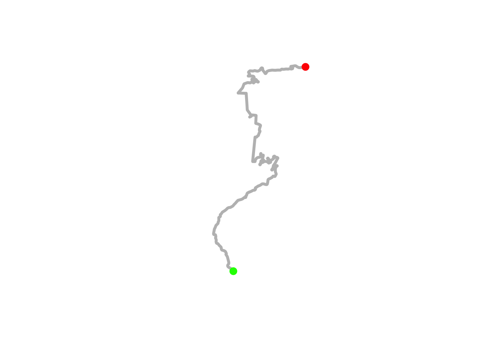
This also suggests to us that we can add additional nodes and colour those. We could also then segment the edges between the nodes.
# Get line segment coords
edges = st_coordinates(st_geometry(route_dg, "edges"))
# Find the mid point by segment rather than distance
mid_edge = edges[floor(nrow(edges)/2),]
mid_edge_pt = st_sfc(st_point(c(mid_edge['X'],
mid_edge['Y'])),
crs=st_crs(route_dg)$proj4string)
mid_edge_pt## Geometry set for 1 feature
## geometry type: POINT
## dimension: XY
## bbox: xmin: 730424.6 ymin: 4962589 xmax: 730424.6 ymax: 4962589
## CRS: +proj=utm +zone=31 +datum=WGS84 +units=m +no_defs## POINT (730424.6 4962589)We can add this point as a node on our graph using the sfnetworks::st_network_blend() function:
route_dg2 = st_network_blend(route_dg, mid_edge_pt)
plot(route_dg2)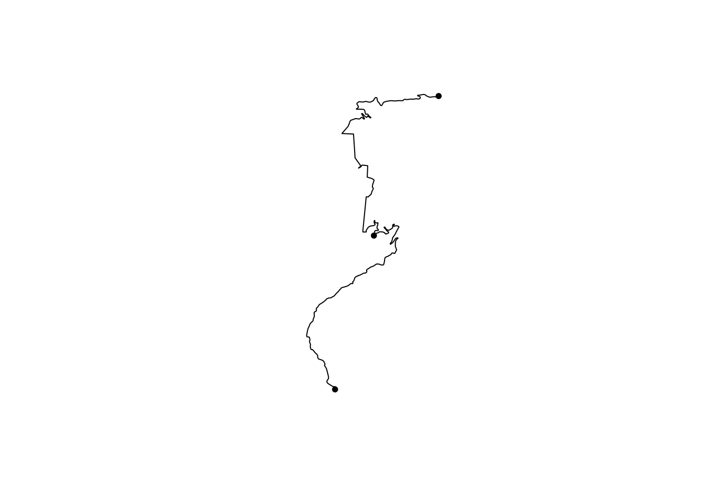
Now let’s see what happens if we add that node to the graph, and then colour the graph by the node defined edges along the route:
#https://luukvdmeer.github.io/sfnetworks/articles/preprocess_and_clean.html
edge_colors = function(x) rep(sf.colors(12, categorical = TRUE)[-2],
2)[c(1:igraph::ecount(x))]
plot(st_geometry(route_dg2, "edges"),
col = edge_colors(route_dg2), lwd = 4)
plot(st_geometry(route_dg2, "nodes"),
col= 'black', pch = 20, cex = 1, add = TRUE)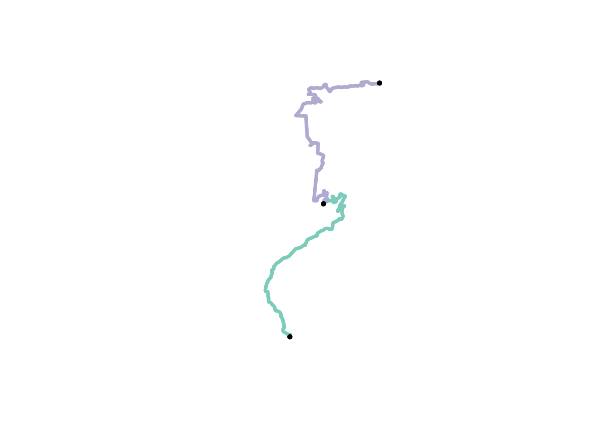
This suggests that if we have a set of split points, for example, we can add them as nodes to the graph and then colour the graph edges differently for each edge that connects nodes along the route.
It also suggests we can plot separate splits. For example, here’s the second half of the route:
plot(st_geometry(route_dg2, "edges")[2],
col = edge_colors(route_dg2), lwd = 4)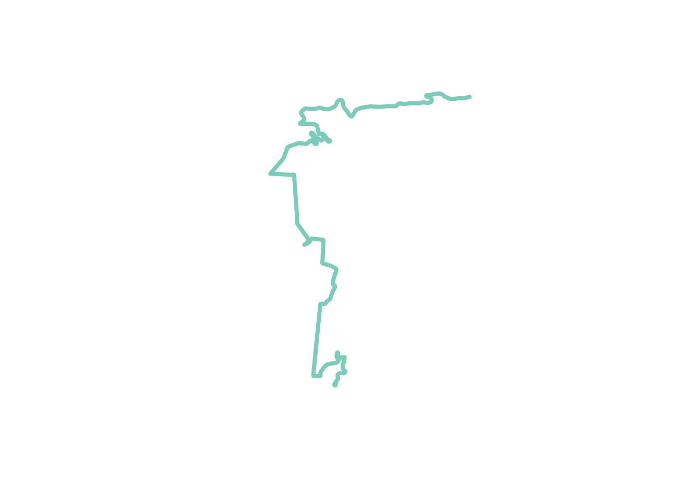
Split point locations are often given in terms of “distance into stage”, so being able to easily add a node a certain distance along a route defined as a linestring would be really handy… Also being trivially able to select a node and found out how far it was along from the start of the route, to the end of the route, to the next node and to the previous node.
20.5 Analysing Road Networks with sfnetworks
We can also represent a more complex set of roads as a network. For example, a set of roads retrieved from OpenStreetMap.
20.5.1 Creating an sfnetworks Graph
To create the spatial network, we pass the “lines” retrieved using osmdata::opq() to the sfnetworks::as_sfnetwork() function, this time setting the graph as undirected:
# Create the sfnetwork object
stage_osm_g <- as_sfnetwork(stage_osm$osm_lines,
directed = FALSE)
stage_osm_g## # A sfnetwork with 578 nodes and 400 edges
## #
## # CRS: EPSG:4326
## #
## # An undirected simple graph with 183 components with spatially explicit edges
## #
## # Node Data: 578 x 1 (active)
## # Geometry type: POINT
## # Dimension: XY
## # Bounding box: xmin: 5.861884 ymin: 44.72746 xmax: 5.959824 ymax: 44.82754
## geometry
## <POINT [°]>
## 1 (5.940974 44.81919)
## 2 (5.907405 44.81978)
## 3 (5.883881 44.75105)
## 4 (5.887348 44.75815)
## 5 (5.906538 44.81779)
## 6 (5.907493 44.81789)
## # … with 572 more rows
## #
## # Edge Data: 400 x 30
## # Geometry type: LINESTRING
## # Dimension: XY
## # Bounding box: xmin: 5.856738 ymin: 44.72746 xmax: 5.959824 ymax: 44.8285
## from to osm_id name access bicycle bridge covered fixme foot highway
## <int> <int> <chr> <chr> <chr> <chr> <chr> <chr> <chr> <chr> <chr>
## 1 1 2 25309… Rout… <NA> <NA> <NA> <NA> <NA> <NA> unclas…
## 2 3 4 25309… <NA> <NA> <NA> <NA> <NA> <NA> <NA> tertia…
## 3 5 6 25312… <NA> <NA> <NA> <NA> <NA> <NA> <NA> unclas…
## # … with 397 more rows, and 19 more variables: incline <chr>, lanes <chr>,
## # layer <chr>, maxlength <chr>, maxspeed <chr>, motor_vehicle <chr>,
## # oneway <chr>, ref <chr>, sac_scale <chr>, service <chr>, smoothness <chr>,
## # source <chr>, surface <chr>, tracktype <chr>, trail_visibility <chr>,
## # tunnel <chr>, via_ferrata_scale <chr>, width <chr>, geometry <LINESTRING
## # [°]>Let’s see what it looks like…
plot(stage_osm_g, col='grey', cex=0.5)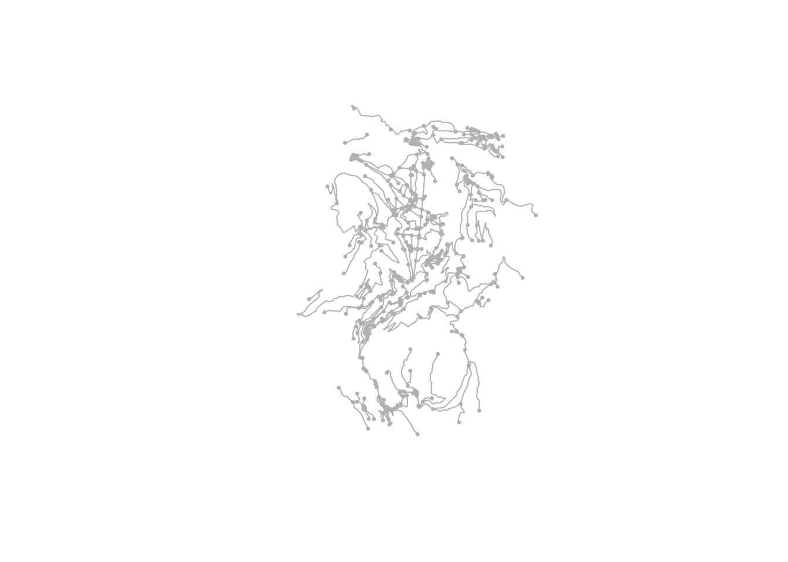
Well it looks like there’s something there!
Can we transform the projection?
stage_osm_g_utm = stage_osm_g %>%
st_transform(st_crs(buffered_route_utm))
stage_osm_g_utm## # A sfnetwork with 578 nodes and 400 edges
## #
## # CRS: +proj=utm +zone=31 +datum=WGS84 +units=m +no_defs
## #
## # An undirected simple graph with 183 components with spatially explicit edges
## #
## # Node Data: 578 x 1 (active)
## # Geometry type: POINT
## # Dimension: XY
## # Bounding box: xmin: 726465.8 ymin: 4956791 xmax: 734111.8 ymax: 4967832
## geometry
## <POINT [m]>
## 1 (732522.3 4967074)
## 2 (729866 4967043)
## 3 (728277 4959342)
## 4 (728523.4 4960141)
## 5 (729805.4 4966819)
## 6 (729880.4 4966833)
## # … with 572 more rows
## #
## # Edge Data: 400 x 30
## # Geometry type: LINESTRING
## # Dimension: XY
## # Bounding box: xmin: 726076.7 ymin: 4956791 xmax: 734111.8 ymax: 4967936
## from to osm_id name access bicycle bridge covered fixme foot highway
## <int> <int> <chr> <chr> <chr> <chr> <chr> <chr> <chr> <chr> <chr>
## 1 1 2 25309… Rout… <NA> <NA> <NA> <NA> <NA> <NA> unclas…
## 2 3 4 25309… <NA> <NA> <NA> <NA> <NA> <NA> <NA> tertia…
## 3 5 6 25312… <NA> <NA> <NA> <NA> <NA> <NA> <NA> unclas…
## # … with 397 more rows, and 19 more variables: incline <chr>, lanes <chr>,
## # layer <chr>, maxlength <chr>, maxspeed <chr>, motor_vehicle <chr>,
## # oneway <chr>, ref <chr>, sac_scale <chr>, service <chr>, smoothness <chr>,
## # source <chr>, surface <chr>, tracktype <chr>, trail_visibility <chr>,
## # tunnel <chr>, via_ferrata_scale <chr>, width <chr>, geometry <LINESTRING
## # [m]>20.5.2 Filtering an sfnetworks Graph
Can we view the network in the buffered area around the stage route?
filtered = st_filter(stage_osm_g_utm,
buffered_route_utm,
.pred = st_intersects)
plot(filtered, cex=0.5)
# We can blend plots using an sfnetwork object
# As long as it has the same projected coordinate system...
plot(st_geometry(route_utm), col='red', add=TRUE)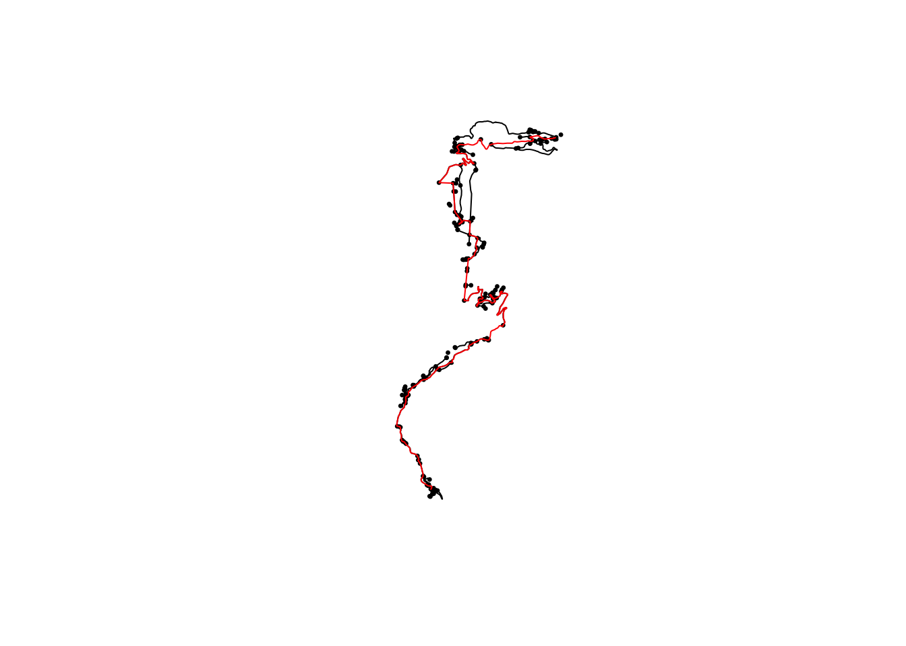
A couple of things to note here. Firstly, the stage route points may not lay exactly on the OSM highway route, even if the routes are supposed to correspond to the same bit of road. Secondly, the rally stage route may go onto track surfaces that are not recorded by OSM as highways lines.
The challenge now is this: can we map out original route on the OSM network, and return a filtered part of the network that show the original route and the road junctions along it? If so, then we have the basis of a tulip diagrammer.
20.5.3 Viewing a Buffered Area Around a Junction Node
Get a (carefully selected!) node, buffer around it and see what we can see:
# Find a junction on the road network
n = st_geometry(filtered, "nodes")[85]
# Generate a buffered area around the road network
buffered_n = st_buffer(n, buffer_margin_200m)
# Filter the road network to the buffered area
filtered2 = st_filter(stage_osm_g_utm,
buffered_n,
.pred = st_intersects)
plot(filtered2, cex=0.5, col = 'grey', lwd = 6)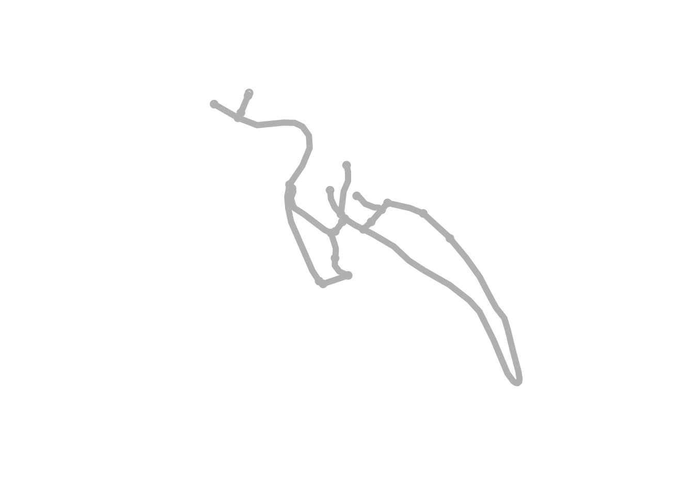
If we crop our route to the buffered area, we should be able to overlay it on the road network visually at least:
# Crop the route to the buffered area
filtered3 = st_crop(route_utm,
buffered_n)
# See what we've got
plot(filtered2, cex=0.5, col = 'grey', lwd = 6)
plot(st_geometry(filtered3), cex=0.5, col='red', add=TRUE)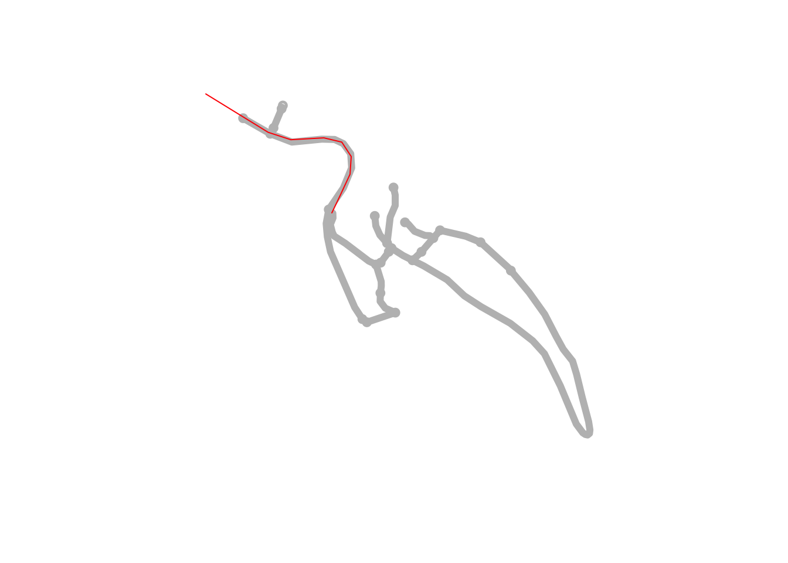 Okay, so we have the road network and part of the stage route; the stage route passes a junction on the right.
This could be promising, if we can find a way to reliably snap routes to OSM lines and index nodes along a route.
One way to do this might be to crudely map a route onto the nearest OSM line and then hope that the OSM line is the appropriate track…
20.5.4 Snapping a Route to a Road Network
The sfnetworks::st_network_blend() function looks like it will try to map points as new nodes onto the nearest part of a graph route.
Let’s get the nodes from our cropped route. There must be a better way of doing this (it’s such an obvious thing to want to do!) but I can’t find a straightforward way to do it, so we’ll just have to make something up! Cast the coordinates to a multipoint object then cast that a list of points:
# Generate a multipoint from a list of coordinates
pois_mp = st_sfc(st_multipoint(st_coordinates(filtered3)),
crs=st_crs(filtered3))
# Generate a list of points from a multipoint
# Via: https://github.com/r-spatial/sf/issues/114
pois_points = st_cast(x = pois_mp, to = "POINT")Let’s see what happens if we try to snap those route points onto the road network:
blended = st_network_blend(filtered2, pois_points)
plot(filtered2, cex=0.5, col = 'grey', lwd = 6)
plot(blended, cex=0.5, col='red', add=TRUE)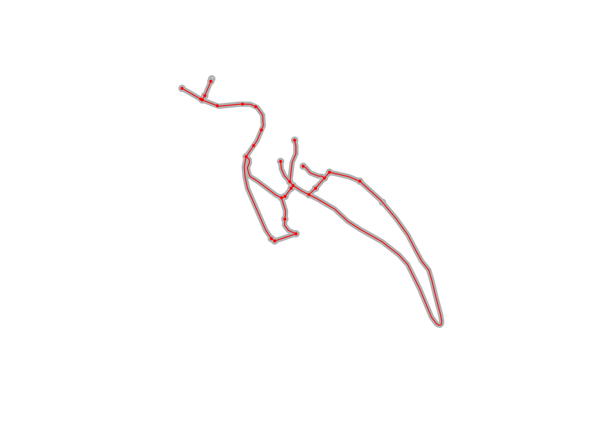
Okay, they seem to have snapped new nodes onto the route network.
What happens if we now buffer around that route fragment and just show the route snapped to the road network:
# Buffered area around the route
filtered3_buffered = st_buffer(filtered3, units::set_units(15, m))
# Limit the road network to the buffered area round the route
filtered4 = st_filter(blended,
filtered3_buffered,
.pred = st_intersects)
# See what we've got
plot(filtered4, cex=0.5, col='red')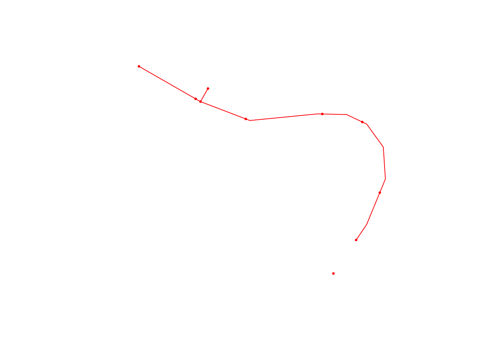
In the above example we see the snapped nodes are what the sfnetworks docs refer to as pseudo nodes that have only one incoming and one outgoing edge. (I guess this means we can also use network analysis to easily identify those nodes as nodes of degree 2?)
The sfnetworks package provides a converter that can be applied via the tidygraph::convert function for cleaning (“smoothing”) these pseudo nodes, sfnetworks::to_spatial_smoot, so let’s see how that works:
library(tidygraph)
smoothed = convert(filtered4, to_spatial_smooth) %>%
# Remove singleton nodes
convert(to_spatial_subdivision, .clean = TRUE)
plot(smoothed, cex=0.5, col='red')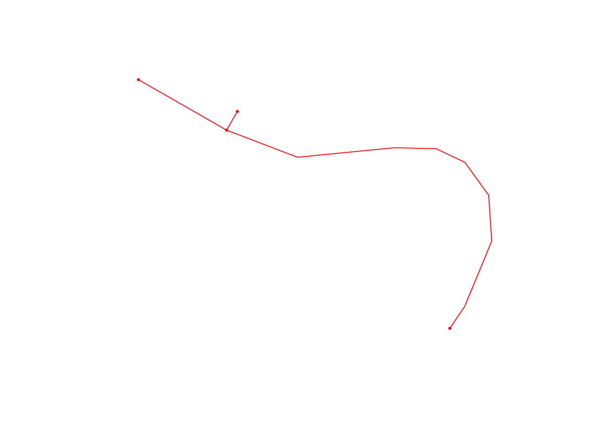
So that seems to work.
Can we plot also somehow fettle the layout algorithm so that the nodes along the main path (which we somehow need to distinguish with start and stop nodes) is horizontally or vertically laid out?
20.5.5 Snapping a Full Stage Route to the Road Network
What happens now if we try that recipe with the full route?
# Get a buffered region round the route
#buffer_margin_1km = units::set_units(1000, m)
buffered_route_utm <- st_buffer(route_utm, buffer_margin_200m)
# Filter the road network to the buffered area
full_filtered = st_filter(stage_osm_g_utm,
buffered_route_utm,
.pred = st_intersects)
# Route points
route_pois_mp = st_sfc(st_multipoint(st_coordinates(route_utm)),
crs=st_crs(route_utm))
# Generate a list of points from a multipoint
route_pois_points = st_cast(x = route_pois_mp, to = "POINT")
# Snap to road network
full_blended = st_network_blend(full_filtered, route_pois_points)
# Smooth
full_smoothed = convert(full_blended, to_spatial_smooth) %>%
# Remove singleton nodes
convert(to_spatial_subdivision, .clean = TRUE)
# See what we've got
plot(full_smoothed, cex=0.5, col='red')
plot(route_utm$geometry, col='black', add=TRUE)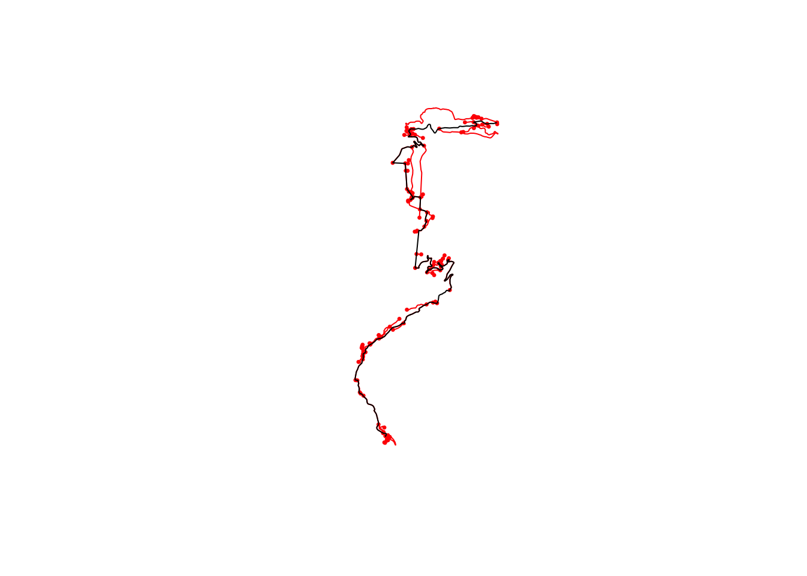 So this isn’t what we want. When we do the intersection, we drop the nodes outside the buffer. But what we want is for new nodes to be create where edges are cut by the filtering buffer.
This is perhaps a cropping function rather than a filter? Although cropping cuts to a rectangle, which is also not what we want…
# Crop the road network to the buffered area
# https://luukvdmeer.github.io/sfnetworks/articles/join_filter.html
full_cropped = st_crop(stage_osm_g_utm, buffered_route_utm)
# Snap to road network
full_cropblended_ = st_network_blend(full_cropped, route_pois_points)
# Smooth
full_cropsmoothed = convert(full_cropblended_, to_spatial_smooth) %>%
# Remove singleton nodes
convert(to_spatial_subdivision, .clean = TRUE)
# See what we've got
plot(full_cropsmoothed, cex=0.5, col='red')
plot(route_utm$geometry, col='black', add=TRUE)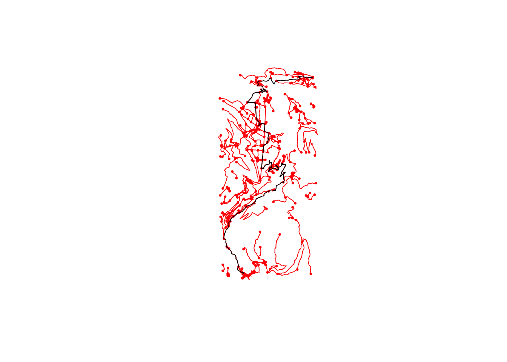
Hmmm.. Stuck, for now…
20.6 Using dodgr to Represent Routes and Road Networks
Although most current effort appears to be being placed on development of the sfnetworks package, two earlier packages exist for representing road networks: stplanr and dodgr. The seed data used by dodgr is typically a set of polyline objects generated from data returned from OpenStreetMap. We can optionally filter the data by our buffered route:
net = stage_osm %>% osmdata::osm_poly2line()
# Optionally buffer the network
buffered_net = net %>%
osmdata::trim_osmdata (buffered_route)We can plot the lines using ggplot2:
library(ggplot2)
ggplot(net$osm_lines) + geom_sf()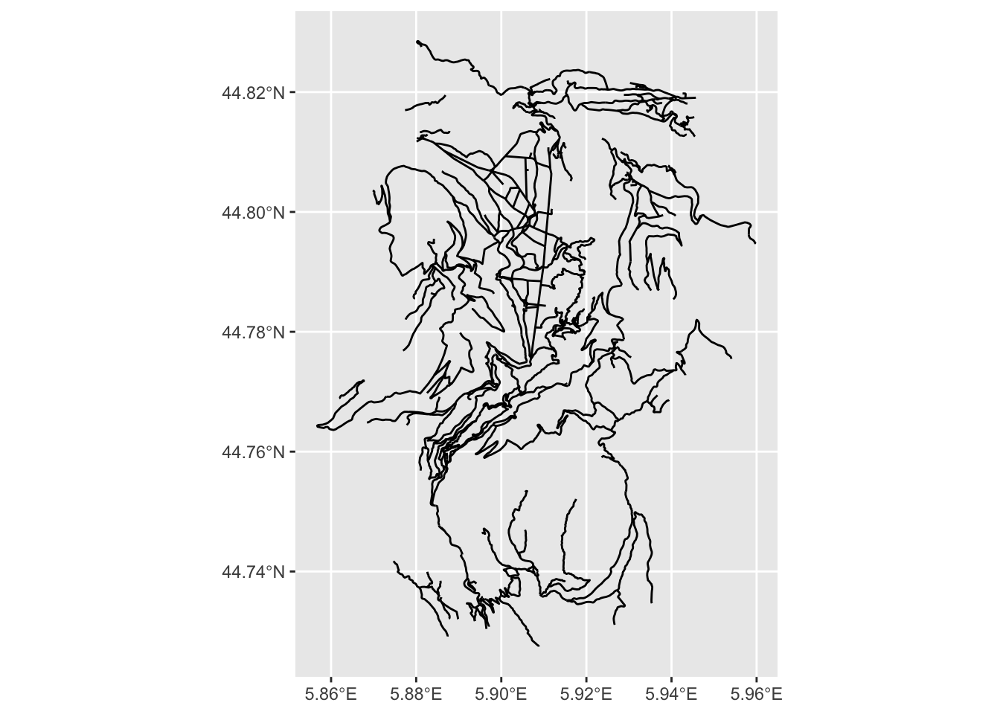
We then convert the lines to a dodgr network / graph object using the dodgr:weight_streetnet() function:
library(dodgr)
graph <- weight_streetnet(stage_osm$osm_lines,
wt_profile = "motorcar")## The following highway types are present in data yet lack corresponding weight_profile values: via_ferrata,The dodgr packages allows edges to be characterised by two values: the distance, and a weighted distance. The weighted distance may be of interest to us if we want to make time estimations or models based on road surface or road surface and tyre combination. For example, the time taken to travel 1km on snow using snow tyres may be expected to differ from the time taken to travel 1km on tarmac. The twistiness of of each section of a route may also be used to weight anticipated travel times.
The dodgr package provides a range of tricks for modifying travel times on normal road netwroks, e.g. to account for time crossing roundabouts (for example, Street networks and time-based routing). It might be possible to add dummy nodes to a route prior to tight corners, for example, to add time weights to a route (or can dodgr route times take into account twistiness, elevation change etc?)
It might be quite amusing to try to define weight profiles for rally_car or rally cars under different weather and/or tyre conditions, perhaps based on models created from datasets of previous rally stage times or even car telemetry? A weighting profile determines the weighting applied to different road types. The default weighting profiles are stored in the dodgr::weighting_profiles list.
20.7 Route Stage Time Simulation
Road network representations, as well as curvature, distance and gradient measures for each step of a route set up some interesting possibility for very simple stage time simulations that might be interesting for storytelling purposes, if not actual stage time prediction.